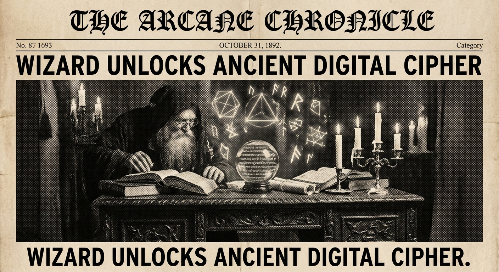

Morning Edition
6:00 AM CSTMarkets & Finance
Secondaries Market Expands & Matures
More investors are using secondaries for liquidity and portfolio management, with attractive opportunities emerging in both growth equity and co-investments. The secondaries market is both expanding and maturing as a viable liquidity source.
— Source: BlackRock Private Markets Outlook 2026PE Activity Rebounding in 2026
Private equity activity is rebounding as transaction volumes recover and pricing remains attractive. While US stocks have outperformed buyout returns over the past decade, private equity still leads in Europe, and top-quartile buyout funds continue to outperform public averages significantly.
— Source: Bain & Company PE Outlook 2026LPs See PE Outperformance Potential
Limited partners recognize that recent public market gains are likely anomalous. Critically, private equity offers choice investments with sizable outperformance—top-quartile buyout funds beat public averages across all time horizons.
— Source: Partners Group Private Markets Outlook 2026Crypto & Tech
AI Infrastructure Spending Dominates
Major players are racing to build AI compute capacity, with infrastructure spending continuing to dominate 2026 investment themes. The fusion of AI and crypto sectors is accelerating from experimentation to real-world application.
— Source: Industry ReportsDeveloper Security Horoscope
Sagittarius developers are advised to start taking security seriously—SQL injections, code injections, script injections. Everyone is out to get your code, and only the paranoid survive. The stars say vigilance today prevents disaster tomorrow.
— Source: Developer Horoscope Wisdom
The Code Wizard: Where Victorian Mysticism Meets Digital Sorcery.
"Monday's code is written with coffee-fueled determination. The bugs you hunt today were planted by Friday's optimistic self. Forgive them, fix them, ship them. A new week is a new compiler."— Developer's Monday Wisdom
Sagittarius Horoscope
Archer, your arrow flies true this Monday! The stars align for bold moves in your code and career. Venus preparing to enter Aries on March 6 amplifies your natural magnetism—perfect for pitching ideas or asking for that raise. Your optimism is your superpower today, but channel it through your editor: refactor that messy module, add those tests you've been avoiding. The universe rewards developers who clean up their own code. Trust your instincts on technical decisions, and don't be afraid to break things (in a branch).
— Stars aligned for Justin, Mar 2, 2026Deep Reads
-
BlackRock PE Strategy:
Growth equity and co-investments showing attractive entry points. Secondaries becoming mainstream liquidity tool for sophisticated LPs managing portfolio exposure.
-
Transaction Volume Recovery:
PE deal activity picking up as financing environments improve. Dry powder deployment accelerating across multiple sectors and geographies.
-
Security First Mindset:
Monday reminder: the paranoid developer survives. Audit your dependencies, review your access logs, and assume breach. Security isn't a feature—it's a foundation.
Active Reminders
- Build Oomi iOS and Android app
- Plaid Integration Research
- Connect Nemu to Notion
- Research VPN/proxy services
- Create security OpenClaw bot